CORRIJA SUA POSTURA
24 DE MAIO DE 2018/SAÚDE
Em pé, qual o modo correto de elevar pesos, colocar ou retirar objetos de lugares altos?
Se você elevar um peso acima da cabeça, estará agredindo tanto a cervical quanto a lombar. Para não prejudicar sua coluna, apóie o objeto pesado no seu corpo e suba em uma escada ou banquinho para depositá-lo adequadamente.
Quando tiver que realizar atividades com os braços elevados, como os professores ao escrever no quadro negro, mantenha-os na altura do ombro ou no máximo até a altura da cabeça. Se necessário, utilize uma escada, banco ou estrado. Também é recomendável não se curvar, por exemplo, para corrigir a lição do aluno, ou em situações similares.
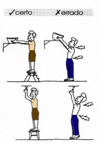Qual a melhor forma de proteger a coluna ao se trabalhar em pé?
Em profissões em que é necessário trabalhar de pé, como dentistas, balconistas e outras, deve-se usar um banco alto de apoio, tendo o cuidado de colocar os pés no chão e evitar curvar a coluna.
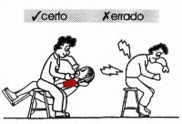Ao realizar atividades domésticas, trabalhos sobre mesa ou balcão?
Evite trabalhar com o tronco totalmente inclinado. Se você trabalha em frente a uma bancada, ou se estiver passando roupa, certifique-se de que a mesa tem altura suficiente para que você não precise se inclinar. Se for necessário ficar muito tempo em pé, aconselha-se utilizar um pequeno suporte (mais ou menos do tamanho de um tijolo) para colocar alternadamente sob os pés.
Em frente à pia do banheiro e ao fazer a cama, dobre os joelhos. Ao varrer ou aspirar pó ou em movimentos semelhantes, evite "torcer" a coluna.
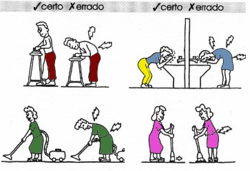Como proteger a coluna ao trabalhar agachado, no jardim, por exemplo?
Ao trabalhar agachado, flexione os joelhos e mantenha as costas retas. Se for possível, apóie uma das mãos em um dos joelhos. Ou então, ajoelhe-se sobre uma das pernas e apóie o tronco sobre a coxa, alternando entre uma perna e outra; ou ainda, use um pequeno banco para sentar.
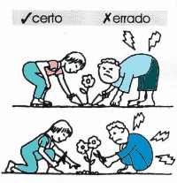Como carregar mochilas, compras, malas e outros objetos pesados?
Mochilas devem ser presas às costas e não penduradas em um só ombro. As compras devem ser divididas entre as duas mãos. Malas e outros objetos pesados devem ser levados em um carrinho, que deve ser empurrado e não puxado.
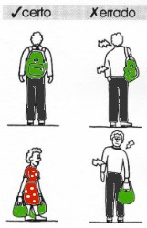Como caminhar?
Ao caminhar, olhe para a frente, mantendo o abdômen contraído. O tipo de sapato ideal para o dia-a-dia deve ser fechado atrás para dar estabilidade às passadas, ter o salto de base larga e leve, com altura de no máximo 4 centímetros , e de preferência, com amortecimento. Para caminhadas, utilize um tênis adequado.
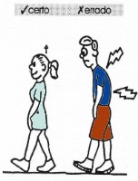Como sentar-se adequadamente?
A cadeira ideal tem encosto reto, de forma a apoiar a região média da coluna, com abertura para as nádegas. As coxas devem estar apoiadas suavemente em todo o assento com os joelhos em 90º e os pés apoiados no chão. Não use cadeiras reclináveis.
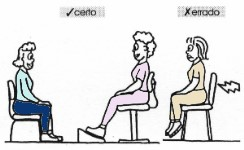Como sentar-se no trabalho?
No trabalho, em frente a uma mesa ou digitando no computador, permaneça com as pernas debaixo da mesa; coloque o computador a uma altura adequada e fique com os braços junto ao corpo. Utilize um suporte para que o texto fique na altura dos olhos e em frente. Como a altura da mesa nem sempre é adequada, deve-se elevar o que está se fazendo de modo a não curvar muito a região cervical e a dorsal. Estando sentado, nunca gire para pegar um objeto às costas. E atenção: não apóie o telefone entre a orelha e o ombro pois isto força a coluna cervical.
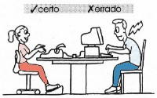Como dormir?
Para dormir, a posição ideal é a de barriga para cima e, alternativamente, a de lado. Evite dormir de bruços, pois o pescoço fica torcido e há sobrecarga da região lombar. De lado, o ideal é dormir com uma perna sobre a outra, ambas semiflexionadas. Muitas vezes, não conseguimos manter um joelho sobre o outro, e encostamos o joelho que está em cima no colchão, o que causa uma torção. Neste caso, recomenda-se utilizar um pequeno travesseiro embaixo do joelho.Evite colchões macios, que não dão sustentação, e colchões muito duros, pois os ombros e o quadril ficarão mal acomodados. Para saber qual o colchão ideal, consulte as tabelas de densidade de espuma, que relacionam o peso e a altura da pessoa.
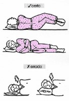Qual a melhor postura para ler?
A leitura deve ser feita na frente de uma mesa com um apoio para o livro. Deficiências visuais (você precisa de óculos?) devem ser corrigidas para evitar posturas inadequadas.
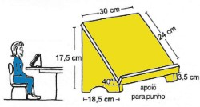Como proteger a coluna ao assistir TV e relaxar em casa?
Não assista TV na cama, mas sentado adequadamente. Algumas pessoas cochilam enquanto assistem TV e a cabeça pende, ficando numa posição que leva à dor e à contratura muscular. Para evitar, deve-se manter sempre a cabeça apoiada. Não deite de lado, com a cabeça apoiada no braço do sofá. Não sente no chão, pois não há altura para as pernas.
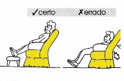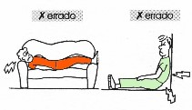E ao dirigir?
Use os espelhos retrovisores para não torcer o pescoço. Regule o banco de modo a acomodar a coluna o mais próximo da posição vertical; a distância dos pedais não deve ser muito grande, para que você não precise se esticar, o que também afeta a postura.
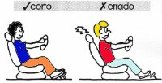Como levantar-se corretamente da cama?
Quando você acorda, sua coluna está em relativo repouso. Assim, procure levantar calmamente, para não agredi-la. Sem levantar a cabeça, fique deitado de lado, dobre as pernas e impulsione o corpo com a mão, ao mesmo tempo em que coloca as pernas para fora da cama.
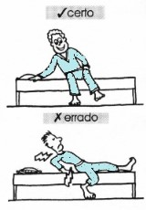Estando em pé, qual a melhor maneira de levantar e carregar pesos?
Ao erguer um peso, abaixe-se, flexionando os joelhos até em baixo sem curvar a coluna. Se o objeto for volumoso e pesado, carregue-o junto ao tronco. Se possível, coloque o objeto em um carrinho e empurre-o ao invés de carregá-lo.
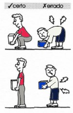IMPORTANTE: Somente médicos devidamente habilitados podem diagnosticar doenças, indicar tratamentos e receitar remédios. As informações disponíveis possuem apenas caráter educativo.
FONTE: Ministério da Saúde. Instituto Nacional de Traumatologia e Ortopedia